Bulletins neige · Où skier
Des bulletins neige quotidiens pour les skieurs : où est la neige, ce qui arrive et où skier, d'après la carte de neige SnowScope et les stations de mesure. Chaque chiffre vient des données du jour.

Cimarron Mountain Club, 39 in de neige : la hauteur du jour en haut du domaine (12 novembre). 42 in (106 cm) : c'est la neige en haut du domaine de …
Bulletin neige dans l'Atlas (Maroc), 12 novembre. Stations de l'Atlas aujourd'hui : pas de neige sur les pentes. De la neige seulement sur les plus …
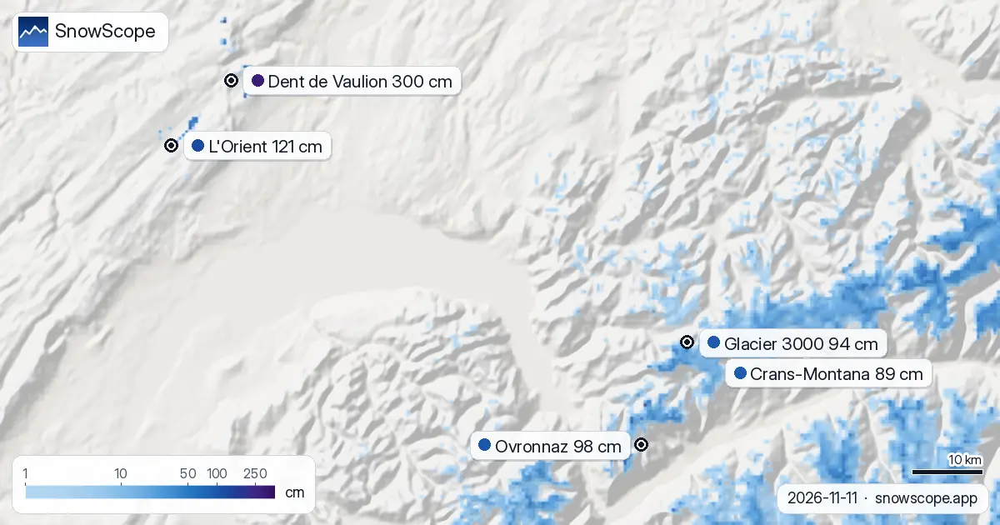
À 1 308 m à Dent de Vaulion, les 0 cm du jour dépassent ce que cette date a donné lors de 34 des 46 hivers passés (habituel : 0 cm) : une bonne …
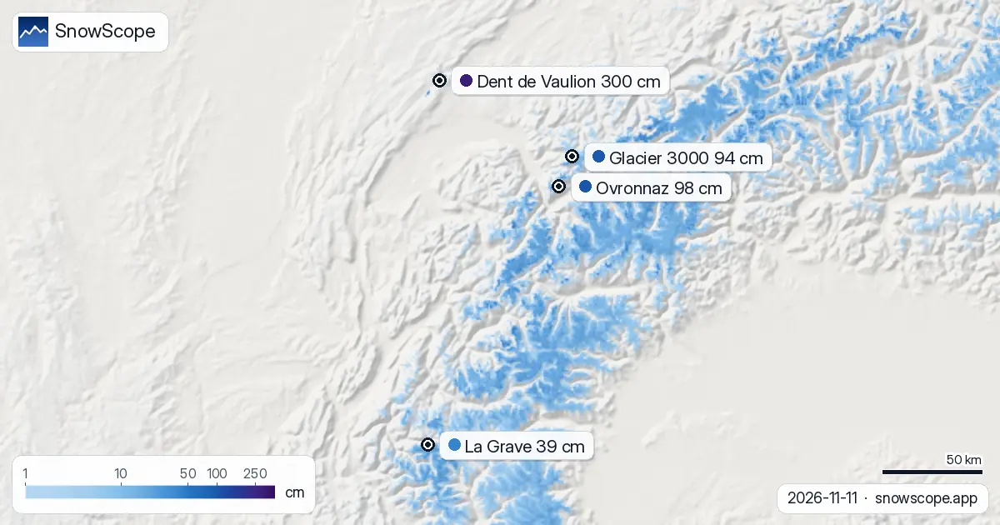
Bulletin neige dans les Alpes, 11 novembre. Trois données, une sélection : la hauteur de neige du jour, la neige fraîche des 72 dernières heures et …
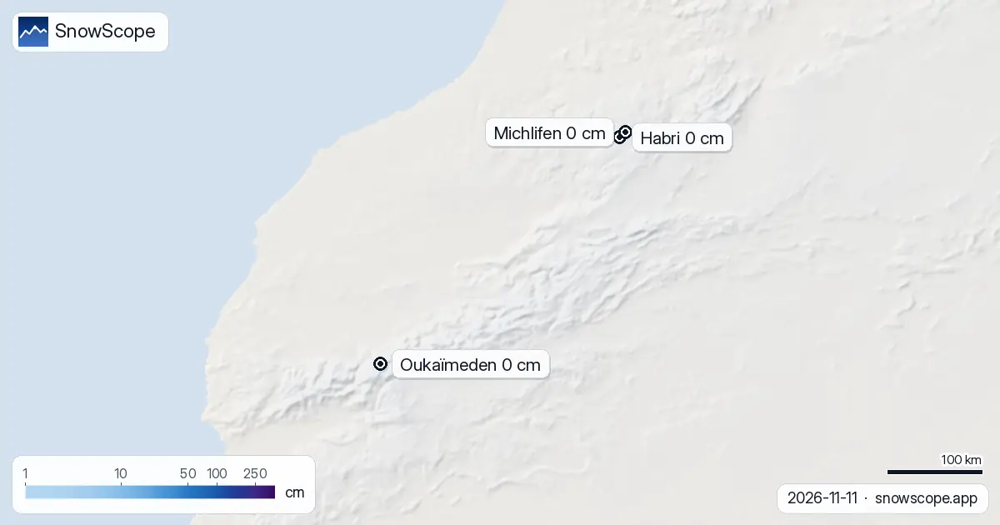
Depuis le 9 novembre, la neige est passée de 40 km² à 20 km² aujourd'hui ; pour le 14 novembre, notre prévision donne 10 km². Aujourd'hui, les pistes …
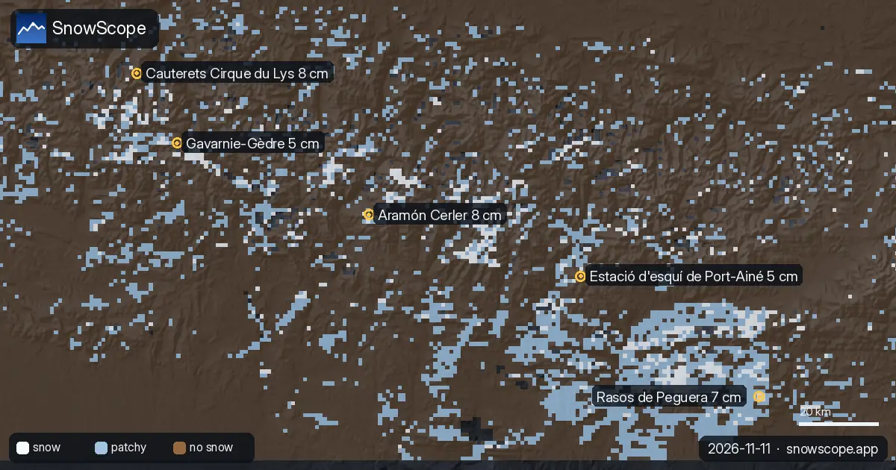
D'après notre modèle de neige et notre prévision, la journée dans les Pyrénées apporte neige fine de début de saison et de l'air doux qui peut …
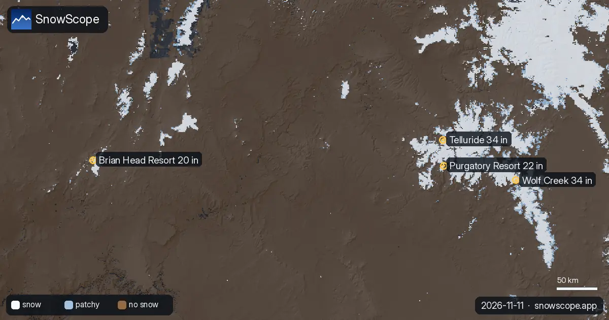
Où aller skier dans l'Ouest américain ? Trois données, une sélection : la hauteur de neige du jour, la neige fraîche des 72 dernières heures et la …
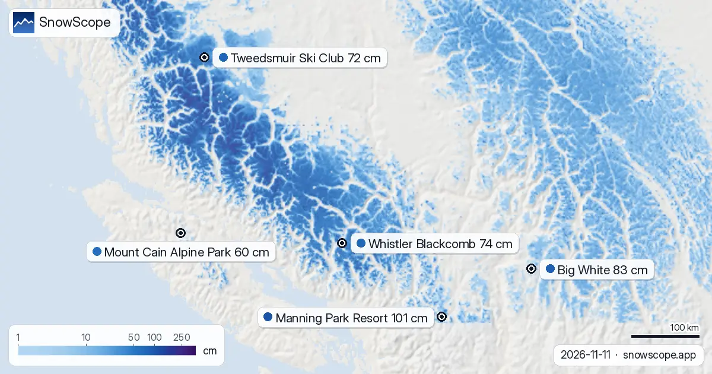
Notre modèle de neige et notre prévision du jour dans l'Ouest canadien annoncent poudreuse fraîche, une chute de neige en approche, matins glacés et …
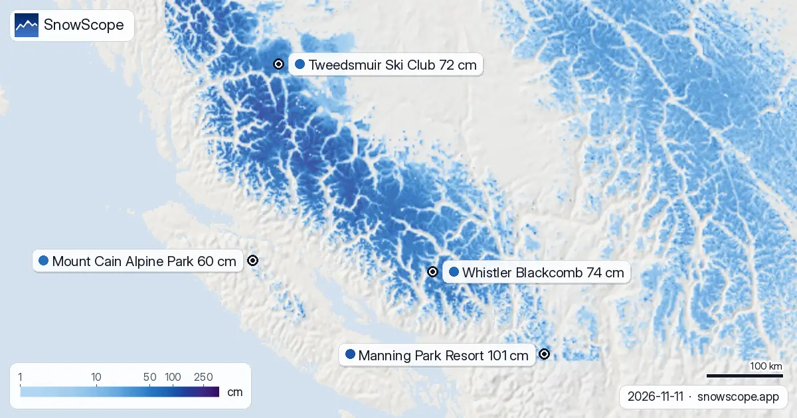
Nous avons pesé la neige déjà au sol, la neige fraîche des 72 dernières heures et ce qu'ajoute la prévision, et retenu Whistler Blackcomb, Tweedsmuir …
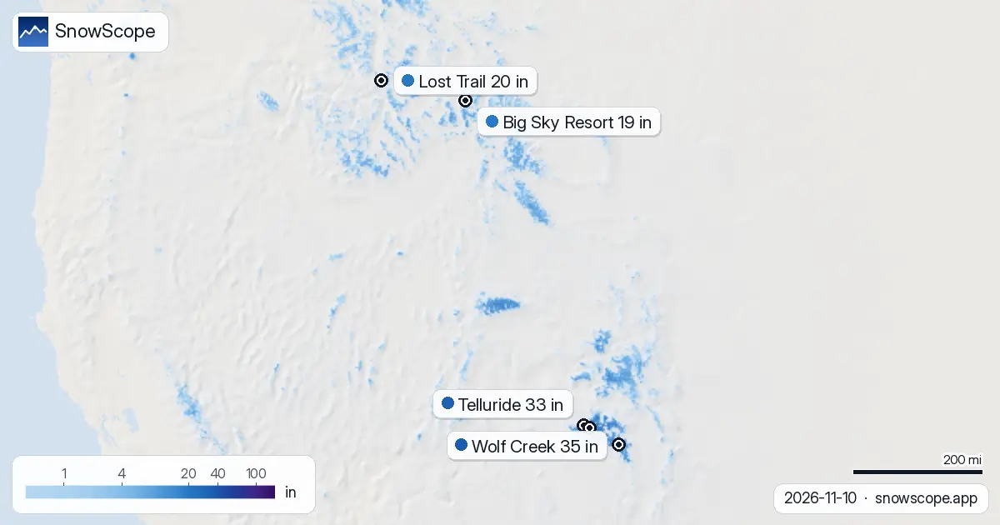
Où la neige est-elle la plus épaisse dans l'Ouest américain aujourd'hui ? Pour trouver le plus de neige dans l'Ouest américain aujourd'hui, regardez …
Où la neige est-elle la plus épaisse dans l'Ouest canadien aujourd'hui ? Neige la plus épaisse dans l'Ouest canadien aujourd'hui : Manning Park …
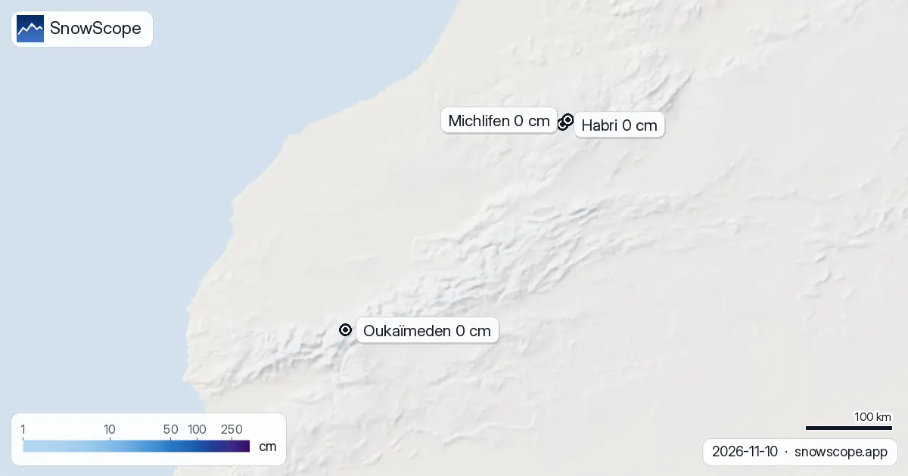
8 cm : c'est le maximum de neige que notre modèle trouve dans l'Atlas aujourd'hui. Les stations de ski de l'Atlas n'ont pas de neige sur leurs pentes …

Notre modèle de neige et notre prévision du jour dans les Alpes annoncent une chute de neige en approche et de l'air doux qui peut laisser une …

Pour trouver le plus de neige dans l'Ouest canadien aujourd'hui, regardez Mount Washington Alpine Resort (Canada) : environ 145 cm en altitude. …

50 cm en haut du domaine : voilà pourquoi La Grave est en tête de notre liste. Nous avons combiné la hauteur de neige du jour, la neige fraîche des …

Telluride, manteau neigeux : une couche de 45 in en altitude (8 novembre). C'est à Kendall Mountain qu'il y a le plus de neige dans l'Ouest américain …

C'est à Kendall Mountain qu'il y a le plus de neige dans l'Ouest américain : environ 50 in (127 cm) sur le haut du domaine, selon notre modèle de …

Les stations de ski de l'Atlas n'ont pas de neige sur leurs pentes aujourd'hui. Notre modèle de neige n'en trouve que sur les plus hauts sommets : …
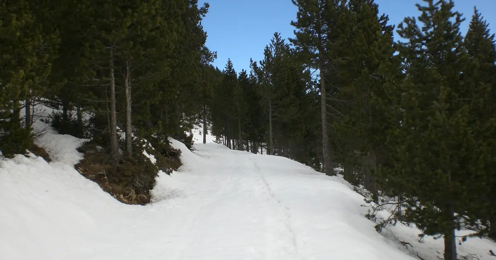
Estació d'esquí Port del Comte (Espagne) a la neige la plus épaisse dans les Pyrénées aujourd'hui, avec environ 29 cm sur le haut du domaine. Suivent …

Oukaimden (Maroc) a la neige la plus épaisse dans l'Atlas (Maroc) aujourd'hui, avec environ 1 cm sur le haut du domaine. Suivent Habri avec 0 cm, …
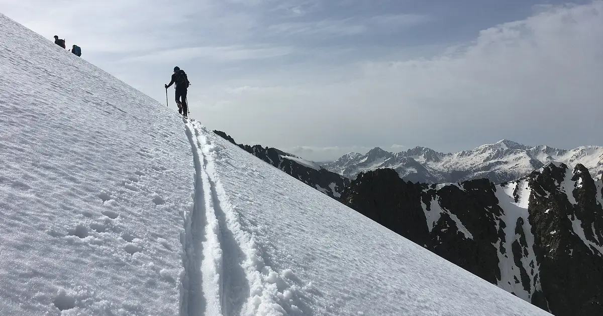
Nous avons combiné la hauteur de neige du jour, la neige fraîche des 72 dernières heures et la prévision pour retenir Isola 2000, Artesina et …
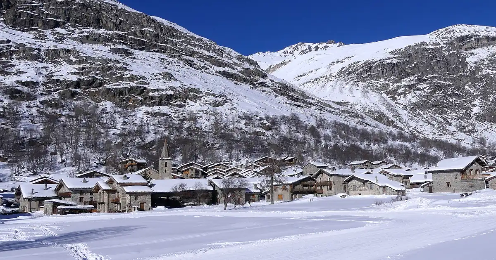
Bonneval-sur-Arc (France) a la neige la plus épaisse dans les Alpes aujourd'hui, avec environ 52 cm sur le haut du domaine. Suivent La Grave avec …

Nous avons combiné la hauteur de neige du jour, la neige fraîche des 72 dernières heures et la prévision pour retenir Aramón Cerler, Rasos de Peguera …

Les stations de ski de l'Atlas n'ont pas de neige sur leurs pentes aujourd'hui. Notre modèle de neige n'en trouve que sur les plus hauts sommets : …
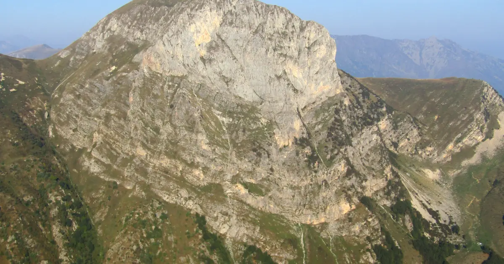
Nous avons combiné la hauteur de neige du jour, la neige fraîche des 72 dernières heures et la prévision pour retenir Artesina, Isola 2000 et Riserva …
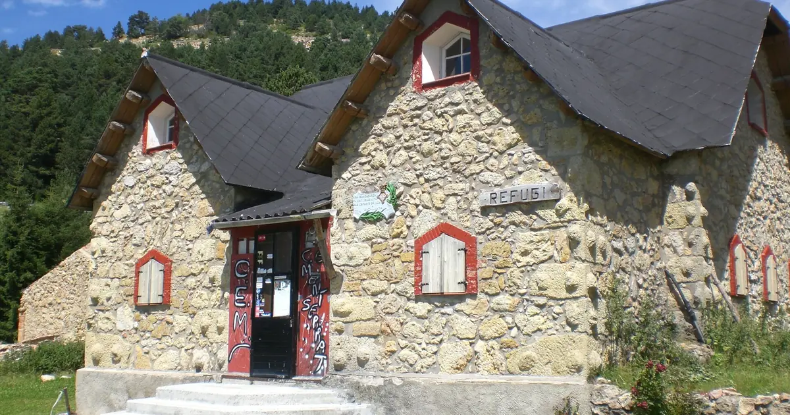
Nous avons combiné la hauteur de neige du jour, la neige fraîche des 72 dernières heures et la prévision pour retenir Rasos de Peguera, Aramón Cerler …

C'est à Kendall Mountain qu'il y a le plus de neige dans l'Ouest américain : environ 51 in (130 cm) sur le haut du domaine, selon notre modèle de …

Nous avons combiné la hauteur de neige du jour, la neige fraîche des 72 dernières heures et la prévision pour retenir Kendall Mountain, Telluride et …

C'est à Silver Star qu'il y a le plus de neige dans l'Ouest canadien : environ 112 cm sur le haut du domaine, selon notre modèle de neige. Viennent …

C'est à Terenten qu'il y a le plus de neige dans les Alpes : environ 73 cm sur le haut du domaine, selon notre modèle de neige. Viennent ensuite …
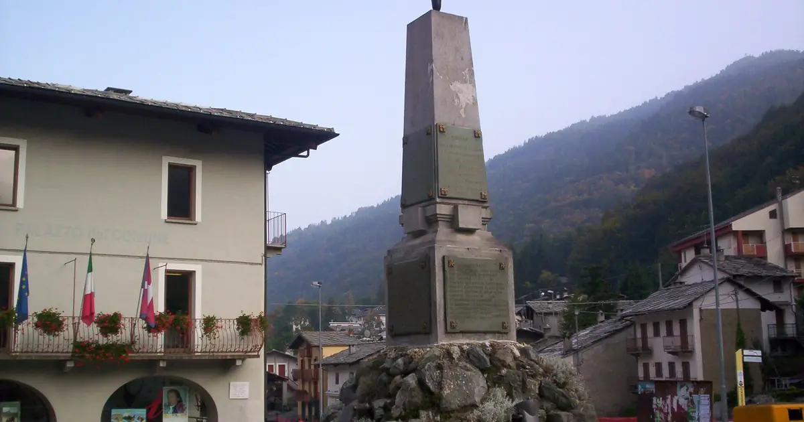
Nous avons combiné la hauteur de neige du jour, la neige fraîche des 72 dernières heures et la prévision pour retenir Crissolo, Prali et La Grave. …

Nous avons combiné la hauteur de neige du jour, la neige fraîche des 72 dernières heures et la prévision pour retenir Masella, Cauterets Cirque du …

C'est à Kendall Mountain qu'il y a le plus de neige dans l'Ouest américain : environ 48 in (122 cm) sur le haut du domaine, selon notre modèle de …

Nous avons combiné la hauteur de neige du jour, la neige fraîche des 72 dernières heures et la prévision pour retenir Mount Cain Alpine Park, …
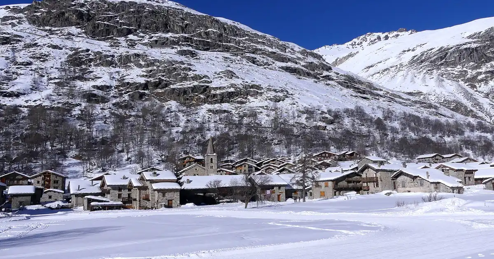
C'est à Bonneval-sur-Arc qu'il y a le plus de neige dans les Alpes : environ 55 cm sur le haut du domaine, selon notre modèle de neige. Viennent …
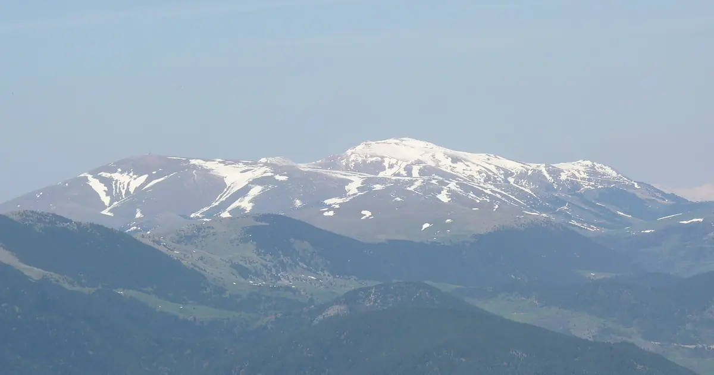
Nous avons combiné la hauteur de neige du jour, la neige fraîche des 72 dernières heures et la prévision pour retenir Masella, Estació d'esquí de …

C'est à Kendall Mountain qu'il y a le plus de neige dans l'Ouest américain : environ 53 in (134 cm) sur le haut du domaine, selon notre modèle de …
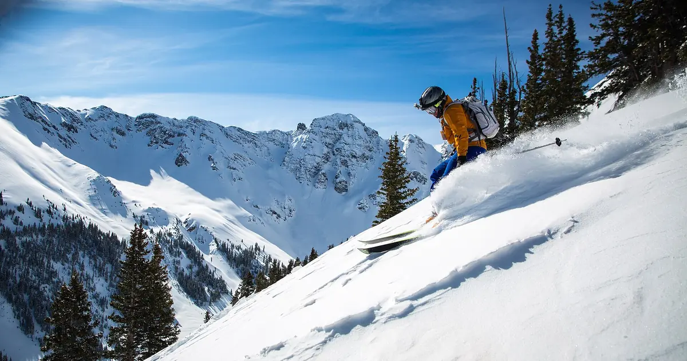
Nous avons combiné la hauteur de neige du jour, la neige fraîche des 72 dernières heures et la prévision pour retenir Silverton Mountain, Telluride …

C'est à Big White qu'il y a le plus de neige dans l'Ouest canadien : environ 91 cm sur le haut du domaine, selon notre modèle de neige. Viennent …

La neige au 3 novembre 2026 : Kendall Mountain 53 in (134 cm) après une tempête, Big White 91 cm, les Alpes jusqu'à 55 cm à Bonneval-sur-Arc. Modèle et mesures.